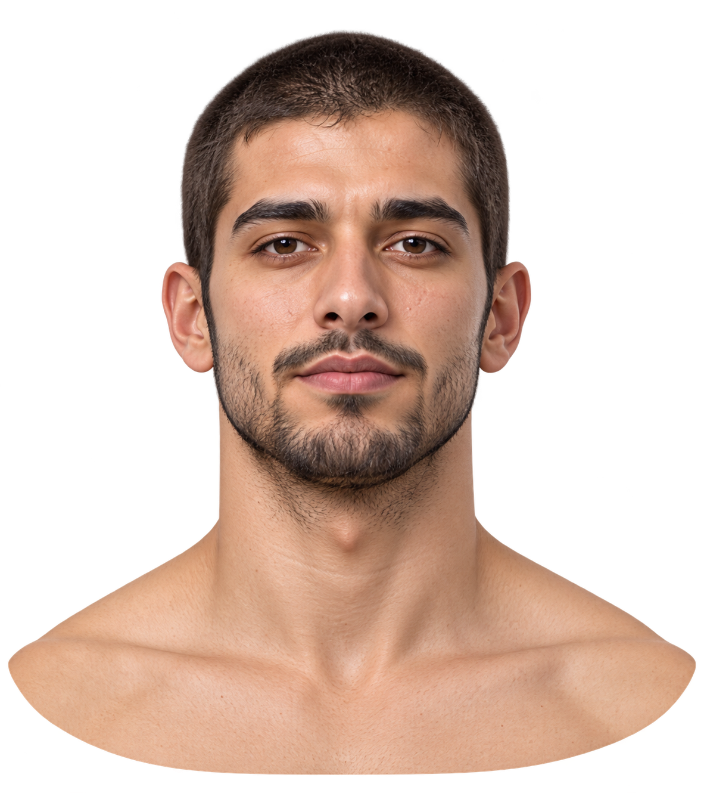
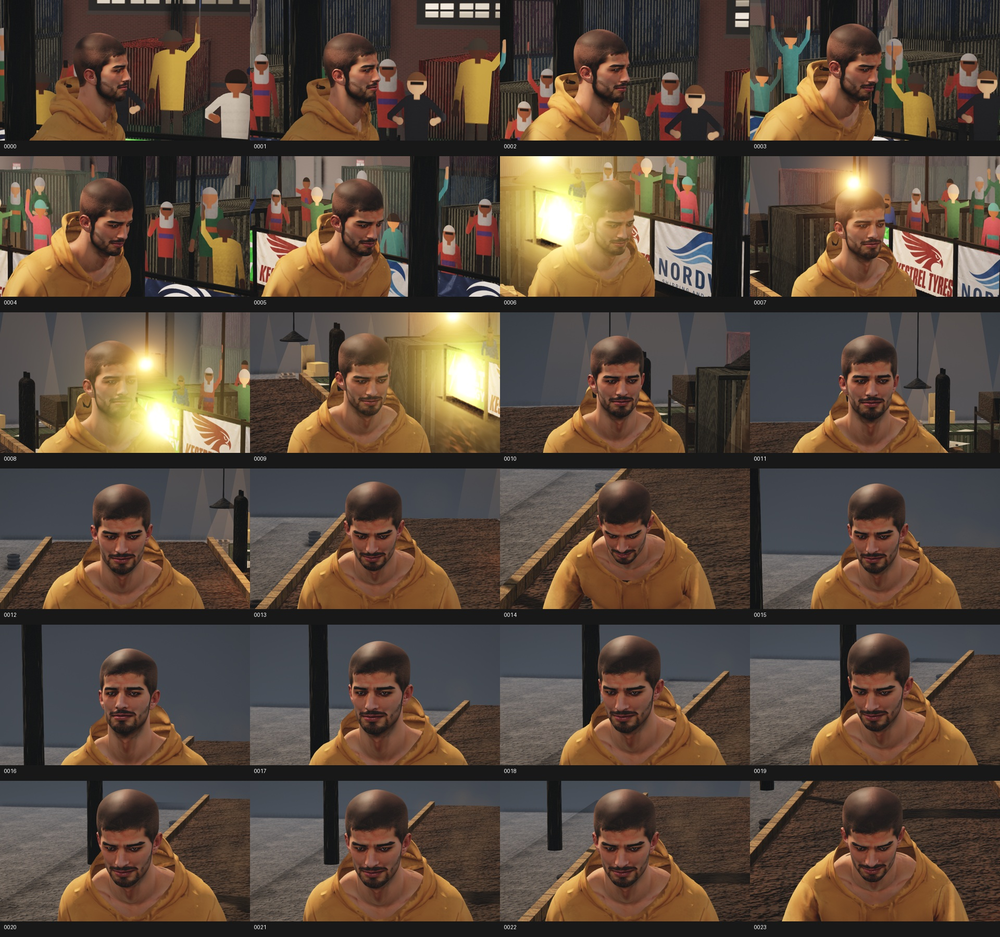
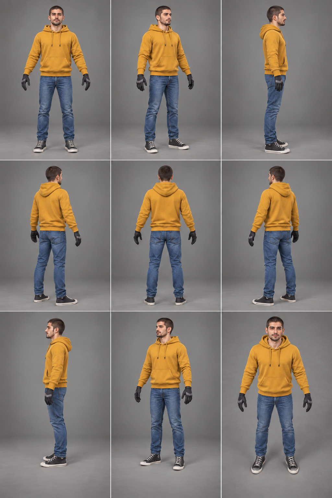
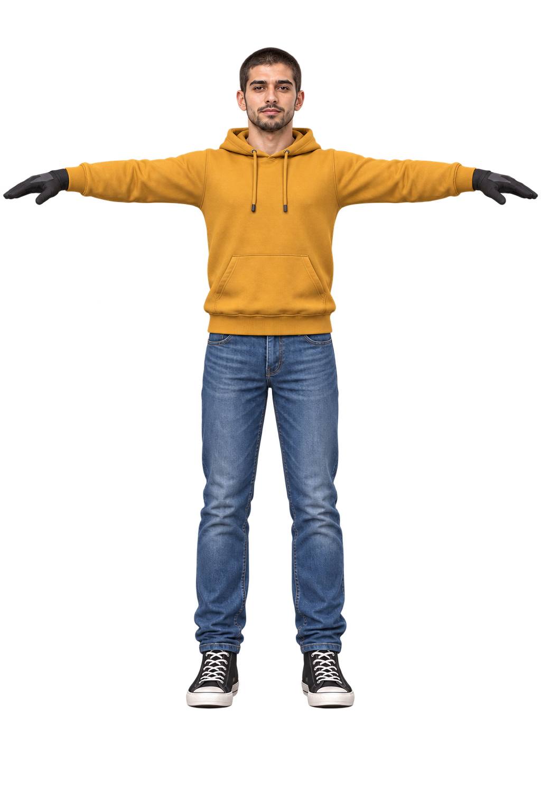
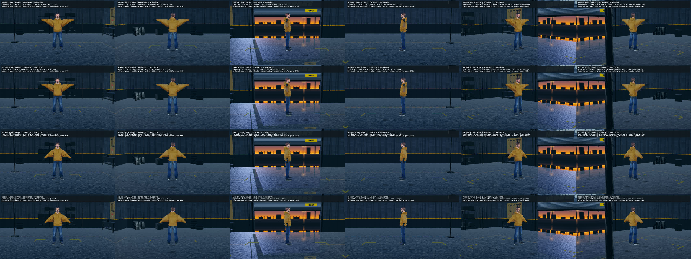
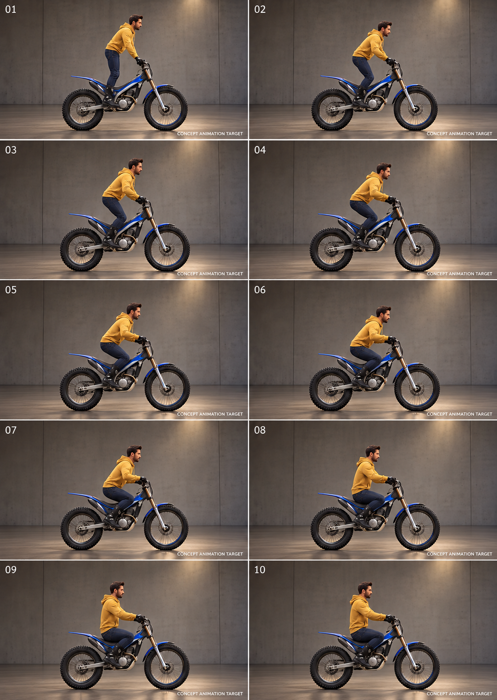
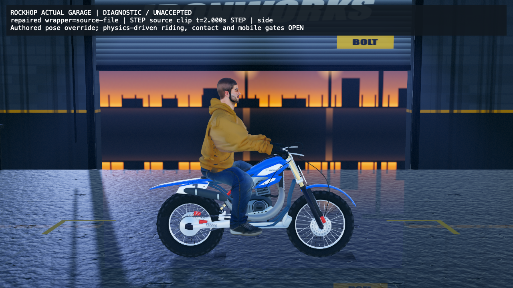
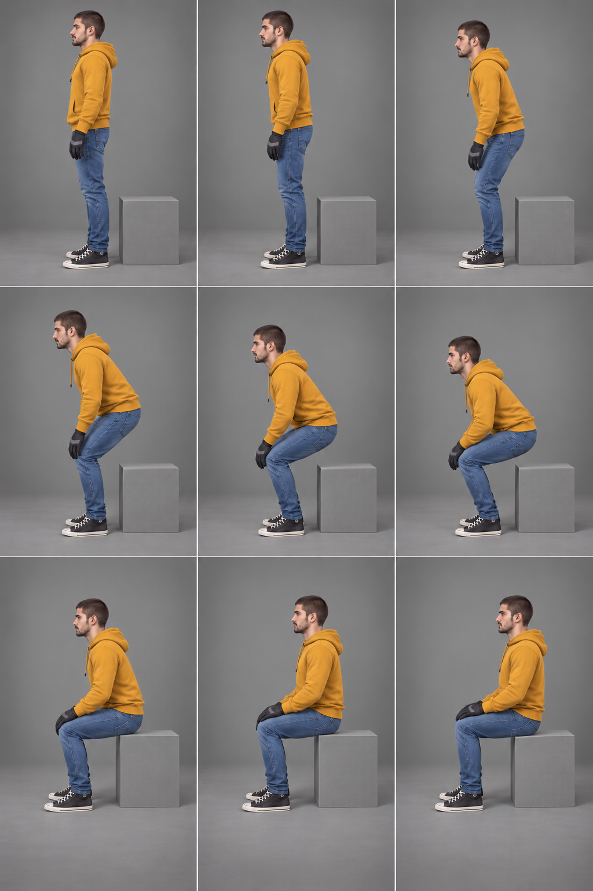

BASELINE PLAN · 2026-10-03
One rider. Clear targets. Visible progress.
Good face and body, standing from every angle, the Garage, and the two core riding motions: forward/standing and back/seated. Outfits and a different hairstyle follow later.
These are retained concept references and actual diagnostic comparisons. They are not a new finished model or a complete target suite. All model acceptance stays open.
86 required still slots
14 partial references
72 missing slots
0/6 accepted milestones
Missing: face profiles/three-quarter targets; calibrated standing A/T/reach from all angles; full forward-standing/back-seated endpoint references; both hands, hips/saddle and feet/peg details; target engine compositions. Reported holes need exact witnesses and classification.
CONCEPT
Face target

Existing front identity reference. Four target angles missing.
ACTUAL
Face comparison

Historical body11 played frames. Earlier face6.8 diagnostic; no current matched face pass.
CONCEPT
Neutral body target

Liked body/style direction. Nine tiles without calibrated cameras.
CONCEPT
T-pose target

Front only. A/T from all other angles remain incomplete.
ACTUAL
Actual T/A comparison

Raw/repaired engine views; played orbit shows persistent underarm webs.
CONCEPT
Bike motion target

Existing side sequence. Concept bike is not the fitting fixture; full forward/back and angle bank missing.
ACTUAL
Actual seated endpoint

Authored aligned STEP endpoint. Grip sockets align; saddle/sole/palm surface acceptance is open.
CONCEPT
Bench anatomy study

Secondary study only. Hands on thighs and feet on floor are not the bike motion contract.
Played evidence decides motion
Both clips were replayed silently in headless WebKit for the audit. The sitting movie uses held STEP poses; it does not prove smooth or physics-driven motion.
Arms-out comparison
Actual engine diagnostic. Motion/contact acceptance remains open.
Aligned sitting diagnostic
Actual engine diagnostic. Motion/contact acceptance remains open.